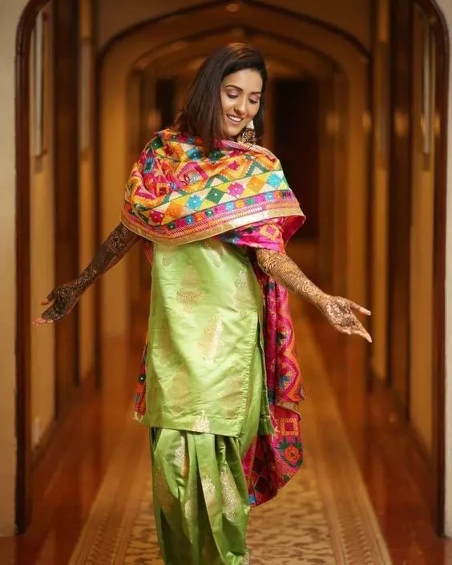

Don't Wanna Go All Phulkari?
Here Are The Ways To Include It
Include It In Your Outfits
Subtly!
BY Shivanshi | 01,Nov,2019 | 6 min read
A wedding comes with a lot of work and decisions to be made. The wedding outfit is the
most important one in all of them!
Phulkari is seen a lot nowadays and it has become more of a trend. So, if you are a bride
who loves the bright and vivacious phulkari thread work, then there’s every reason for
you to include it in your bridal trousseau.
The flair of Phulkari
These ghagras are bound to look great on simple choli because of the vibrant colored
threads used over them for embroidery. Wear an elegant bindi and a bangle along to
complete the traditional look.
The burst of a phulkari dupatta
It is said that a dupatta, when carried in the right way, can enhance the look of an outfit. Be it plain or heavy it can do it all. Adorn these different and gorgeous dupattas and give a perfect finishing to your outfit. Lightweight, super soft and comfortable, this beautiful Phulkari dupattas can bring out the best in you with minimal effort.
